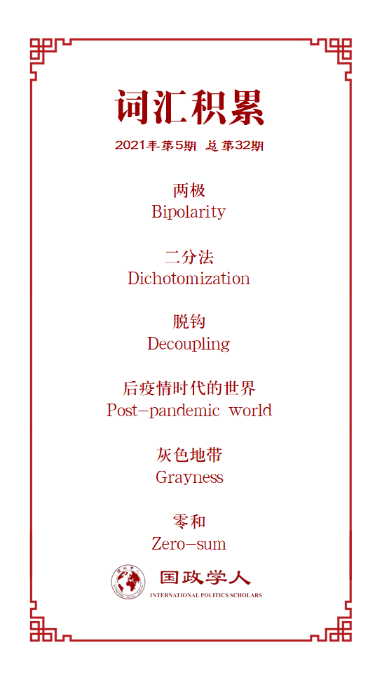

收录于合集

作品简介
【作者】 Shaun Breslin，英国华威大学教授、英国社会科学院院士、英国中国问题专家。
【编译】 廖泽玉（国政学人编译员，大连外国语大学）
【校对】 张曼娜
【审核】 吴天麟，杨紫茵
【排版】 董诗
【美编 】游钜家
【来源】 Shaun Breslin, “Divided but not Poles Apart: Europe, the US and the Rise of China”, Asian Perspectives , 45 (1), 2021:177-190.
https://warwick.ac.uk/fac/soc/pais/people/breslin/research/publications.
【归档】 《国际关系前沿》2021年第5期，总第32期。
期刊简介
《亚洲视角》（ Asian Perspectives ）将亚洲的视角应用于世界和比较政治，探究影响当今亚洲的区域、国际和跨国问题。该杂志是与庆南大学远东研究所合作出版的，由同行评审，每季度出版一次，并致力于促进学者和政策制定者之间活跃的思想交流。
分化但非极化：
欧洲、美国和中国崛起
Divided but Not Poles Apart: Europe, the United States, and the Rise of China
Shaun Breslin
内容提要
尽管美国和欧洲在“中国崛起对全球秩序的影响”这一问题上存在分歧，但近年来，这种分歧已经减少。与此同时，中国领导人在区分以下两个方面的问题时变得更加自信：一是在看待“世界秩序应该如何以及中国如何发挥大国作用”方面，一是如何区分“所谓的西方的偏好和西方强国的典型做法”方面。尽管学者对于“中国对未来全球秩序的影响”的看法不尽相同，但对跨国经济关系的剖析、对潜在领导人不同程度的追随、以及对不同问题领域的治理效力的务实考虑，都意味着全球秩序不可能是由两个固定的集团联盟组成的两极体系。
文章导读
01
导言
作者指出，长期以来，以一种局外人的身份观察中美关系，总让人有种超凡脱俗感。可以肯定的是，其中有些元素似乎来源于现实本身。中美关系本身以及其语言表述的方式都十分紧迫，这说明中美关系显然不同于其他类型的双边关系。相比于其他方面的挑战，中国对于美国的潜在挑战更为严峻和根本，而中美关系处理失败的后果也似乎会更加极端。毫无疑问，未来，人们关注的切实问题是美国与中国发生更多军事冲突的可能性，而非与欧洲。
美国在亚洲安全中扮演着重要角色，而欧洲则并非如此，这也说明了上述不同关系的原因。欧洲人将注意力放在东方，寻找面临的潜在安全挑战时，会止步于俄罗斯而不是继续延伸向中国。与之不同，美国身为全球主导性力量，会关注（其他国家不会关注的）危及到自身霸权的挑战。美国政策的变化确实会对中国崛起的性质产生影响。中美关系是全球极为重要的双边关系，这也使它上升到一种独特的、身处外部的人很难完全理解的程度。
这并非强调欧洲与中国的关系无关紧要。它们与中美关系只是不甚相同。在中美关系几乎上升为“危机”的时候，欧洲位于地缘政治版图的何处？欧洲内部有很多自身的问题和危机需要处理：金融危机、新冠疫情对公共卫生和经济的影响以及欧洲自身独立性的问题。但也有一些欧洲重要行为体，重新思考了过去几十年与中国接触和遭遇方式的深远影响。
美国的中期选举和新冠疫情加剧了中美关系的独特性。但对中国崛起所引起的这种政治行为艺术进行的批判和解释逐渐在其他地方得到呼应。尽管这些表述并不完全一致，但所谓的“自由西方世界”正在形成一个共识：世界需要一个新的中国政策。华盛顿与众多欧洲国家之间的基本立场的差距显然已经减少。
所以，这是否意味这新两极格局的形成以及中美关系例外主义的终结？在对世界秩序应当如何的不同价值观和偏好中，找出二元对立的分界线其实并不难。尽管两边都有某种程度的“他者”存在，但并不意味着这将是一个短期内可以实现的事情，而是会形成多年的秩序之争。即便如此，作者始终认为 极化的观点（无论是两极还是多极）对于理解现状以及未来走向是没有裨益的。
02
区分与分化
一旦涉及全球领导权，中美之间的关系就会被描述为零和博弈。解决全球问题时，中国的方案往往会被西方通过“西方主义”的观点来理解。这就需要建立一种“西方是什么，它代表什么”的观念，以及与此相对应的关于中国的观念。例如，特朗普政府明确表示将中国作为美国的战略竞争对手。其他国家对于中国的态度也变得强硬，而其中也不乏将中国的崛起视为机遇多于挑战的国家。美国在减少中国孔子学院的影响力方面先发制人，而有关中国政治影响力的讨论在北美和大洋洲远比在欧洲更为激烈。但这也并非意味着在欧洲没有相关的讨论。
03
分化与结盟
作者认为，中国逐渐将自己视为西方的直接对手而非替代者。相反，有一些国家在某些领域始终采取反对中国的相同立场。例如，双方有关人权问题的界定以及将联合国行动看做政治行为。当然，这些都不是普遍持有的立场，而且很容易找到不同的声音。但有足够多的人参与进来，而他们似乎有共同的基本立场，这也代表了一种新的共识。所以中美关系的紧张局势是否可以用双边对等以外的角度来看待？这是否是世界分裂为两个阵营的表现？在20世纪，建立两极秩序的第一步是否是美国代表的自由联盟的建立？或许正是如此。但 我们在假设过去的两极秩序会预测未来应对如何的时候，理应相当谨慎。
04
结盟、领导者与追随者
大量证据表明，许多非西方国家在一些问题领域缺乏结盟的热情。这便证明，那些有关“会形成无可避免的稳固联盟”的假设，仅仅是假设而已，且假设往往经不起检验。某些并非与中国享有“维持现状”共同利益的国家，也会拒绝在某些领域采取的绝对分裂和对立的政策。欧盟虽然将中国看作“系统性竞争对手（systemic rival）”，但同时强调中国的“竞争者”角色。因此，在某些问题领域反对中国，甚至在有些时候将中国称之为“系统性对手”的国家，依旧保持与中国的合作来实现共同目标。人们似乎已经广泛的接受这一观点： 有效的全球治理方案不能没有中国的参与。
05
政治经济的脱钩
冷战期间，安全联盟与经济要素或多或少都存在联系。例如，如果某个国家与美国结盟，寻求反对华约国家的安全保障，那么它与苏联或经互会成员国便不可能存在紧密的经济联系。这显然与如今的情况大不相同。现在， 一国完全有可能在与中国保持紧密经贸联系的情况下，同时将美国作为其最重要的安全伙伴。 或者，对中国而言，一国有可能既是其主要的安全威胁，又是其主要的经济伙伴。再者，对于那些将安全要素居于次要位置的国家，可以在常规议程上不支持中国，却与中国保持重要的经济关系。
尽管防止中国投资进入他国市场是很容易的，但是这仅仅是中国在全球经济中发挥重要作用的一小部分。 公司，而非政府，是投资和生产的决策者。 而如今，美国与中国经济依旧交往不断的主要原因是：总部位于美国的公司，将其产品运往中国，以生产出吸引美国顾客的商品。对于政府而言，制定能够说服生产者放弃中国并将生产过程转移至国内的激励或惩罚措施，是一项巨大且艰难的工程。作者认为， 后疫情时代的全球经济关系的发展，很难让政府遵从其政治意愿行事。
06
支持灰色地带
疫情期间，大多数国际政治用语都非黑即白，但作者认为，实际上，我们中的大多数都生活在多样的灰色阴影中，见证着在不同全球行为体的光谱中存在的众多错误和漏洞。 我们中的大多数无法做出全然二元对立的决定。 当一国失去领导权、权威性、合法性和追随者后，并非会简单的、自动的转移到其对手那里。
极化和零和语言的出现，反映了一种通俗易懂的看待世界的方式。从整体层面而言，两极的观点抓住了那个年代的趋势、对全球秩序的不同价值观和追求方式，使其变得易于理解。但是，简单性只能让我们走到这一步， 如果这种简单性导致的期望无法实现，我们就会开始遇到问题。
未来并非整洁、易于界定和描述。相反，它很可能是相当混乱的。或者说，至少在欧洲如此。电影中建立镜头往往从一个特写开始，然后拉回来向你展示更大的画面。你最初以为看到的东西被证明根本不是真的，或者可能只是一个更大的画面的一部分。同样，当你专注于任何具体问题领域的二元对立立场或中美关系，回过头来看更大的图景时，看似两极的东西可能看起来完全不同。基于同样的原因，从外部看待中美关系，或者思考这种双边关系如何同中国与其他国家的关系相契合，都是无稽之谈。
译者评述
疫情期间，加之中美竞争关系的加剧，国际上不免有针对中国的声音。西方国家将中国的主张“西方化”，甚至污蔑诋毁中国。虽然官方回应，但依旧无法阻挡外国政客对于民众宣传中诋毁中国形象。国际关系日趋紧张，双方均使用极端的语言来表明自身的政治立场。中美大国关系是否会重蹈冷战两极格局的覆辙？这是本文作者试图回答的问题。
作者从欧洲的立场出发，指出世界格局并不会走向两极化。作者首先表明，世界对于中国存在诸多质疑，但有些质疑是无端而起的，中国并没有做错什么，反而是欧洲人误解了中国。其次，世界经济政治相互依存的加深，两极对立，政治经济绝对对立的现象不复存在，各国实施对冲战略的可能性增加，也意味着极化不再可能。最后，作者指出面对国际问题时应该秉持的“灰色”态度，杜绝非黑即白的观点。
词汇整理

文章观点不代表本平台观点，本平台评译分享的文章均出于专业学习之用, 不以任何盈利为目的，内容主要呈现对原文的介绍，原文内容请通过各高校购买的数据库自行下载。
好好学习，天天“在看”
国政学人
支持学术公益与知识传播
微信扫一扫赞赏作者 __赞赏
已喜欢，对作者说句悄悄话
取消 __
发送给作者
发送
最多40字，当前共字
上一页 1/3 下一页
长按二维码向我转账
支持学术公益与知识传播
受苹果公司新规定影响，微信 iOS 版的赞赏功能被关闭，可通过二维码转账支持公众号。